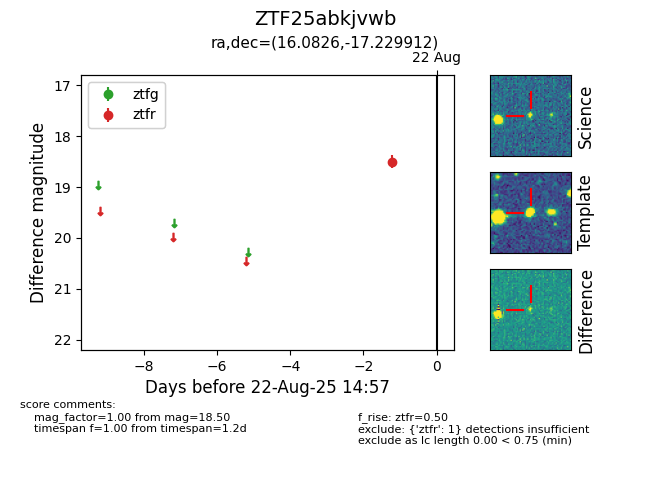

Target ZTF25abkjvwb at 2025-08-22 15:41, see:
FINK: fink-portal.org/ZTF25abkjvwb
Lasair: lasair-ztf.lsst.ac.uk/objects/ZTF25abkjvwb
ALeRCE: alerce.online/object/ZTF25abkjvwb
alt names
ZTF25abkjvwb (ztf,alerce)
coordinates:
equatorial (ra, dec) = (16.0826,-17.22991)
galactic (l, b) = (140.3464,-79.66309)
photometry
last ztfr=18.50
1 ztfr detections
